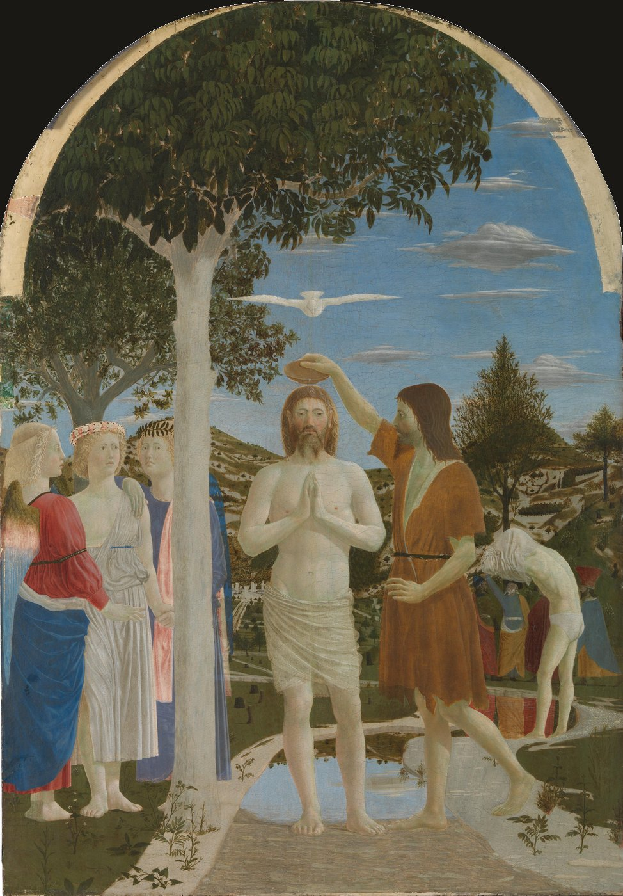
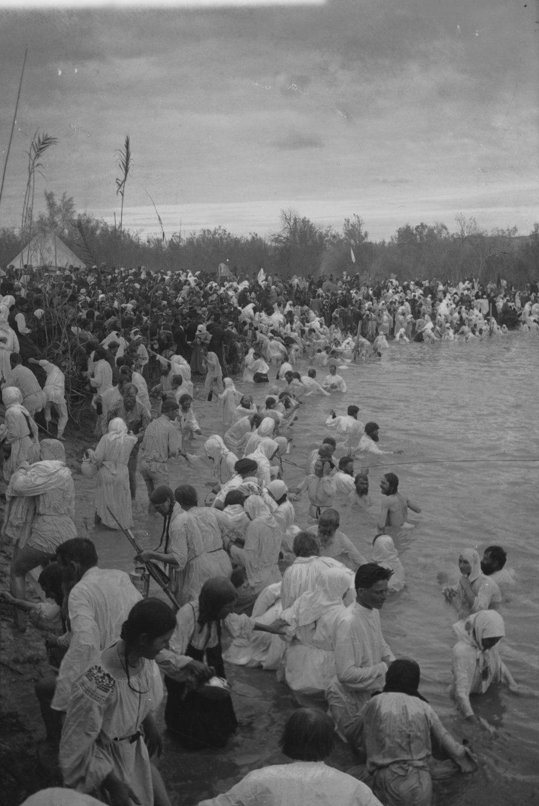
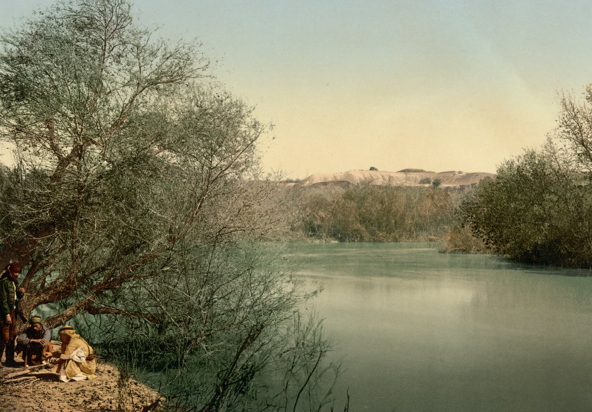

영국 런던, 내셔널 갤러리
예수님은 왜 세례를 받으셨어요?
물에서 올라오시는 예수님 위로 하늘이 열립니다. 예수님이 아무 일도 하시기 전에, 맨 처음 들으신 말은 “내 사랑하는 아들”이었어요.
그림 속에서 찾아보기
- 예수님 머리 위의 흰 비둘기를 찾아보세요. 날개를 어떻게 펴고 있나요?
- 왼쪽 나무 곁에 서 있는 천사 셋을 찾아보세요. 머리에 무엇을 쓰고 있나요? 서로 어떻게 기대어 있나요?
- 요한 뒤쪽에서 옷을 머리 위로 벗고 있는 사람을 찾아보세요. 이 사람은 무엇을 하려는 걸까요?
이야기
예수님이 갈릴리에서 요단강으로 오셔서 요한에게 세례를 받으려 하셨어요(3:13). 요한은 “내가 당신에게서 세례를 받아야 할 터인데 당신이 내게로 오시나이까” 하고 말렸어요(3:14). 예수님은 “이제 허락하라 우리가 이와 같이 하여 모든 의를 이루는 것이 합당하니라” 하셨고, 요한이 허락했어요(3:15).
예수님이 세례를 받으시고 물에서 올라오시자 “하늘이 열리고 하나님의 성령이 비둘기 같이 내려” 예수님 위에 임하셨어요(3:16). 그리고 하늘에서 소리가 들렸어요. “이는 내 사랑하는 아들이요 내 기뻐하는 자라”(3:17). 하늘의 목소리와 비둘기 같은 성령, 물에서 올라오신 아들이 한 장면에 함께 있어요.
피에로 델라 프란체스카의 그림 가운데 남아 있는 가장 이른 작품으로, 고향 보르고 산세폴크로의 세례 요한 성당을 위해 그렸어요. 화가는 요단강 대신 고향 마을 둘레의 냇물과 산, 호두나무를 그려 넣었어요. 마을 사람들이 이 놀라운 일을 바로 자기 동네 앞에서 일어난 일처럼 느끼게 하려고요. 원래는 여러 칸으로 된 제단화의 가운데 그림이었고, 1861년 런던 내셔널 갤러리가 사들였어요.
알고 보면
‘산세폴크로’는 ‘거룩한 무덤’이라는 뜻이에요. 성지에서 돌아오던 순례자 두 사람이 호두나무 아래에서 쉬다가 깨어 보니, 성물이 든 자루가 나무 꼭대기 가지에 올라가 있었다는 이야기가 이 마을에 전해져요. 그래서 그림 속 호두나무는 마을 사람들에게 아주 특별한 나무였어요.그 시절로 가 보기
그곳은 · 요단강, 여리고 동쪽의 세례 터여리고에서 동쪽으로 10킬로미터쯤 떨어진 요단강가가 오래전부터 예수님이 세례를 받으신 곳으로 전해져요. 지금도 해마다 1월이면 2만 명이 넘는 정교회 순례자들이 이곳에 모여 주현절을 지키며 강물에 들어가요.

사진가의 기록장에 남은 제목은 ‘여리고 가는 길, 요단 등지. 주현절의 세례’예요. 정교회는 주현절에 예수님의 세례를 기억하며 요단강 물에 들어가는데, 그 모습을 찍은 사진이에요. 원본 크게 보기가상 복원 · AI가 색을 짐작해 입힌 것이라 실제 색과 다를 수 있어요.


예수님이 세례를 받으신 곳으로 전해지는 요단강가예요. 흑백 원판에 색을 입혀 찍어 낸 ‘포토크롬’이에요. 원본 크게 보기
눈 감고 상상해 보기무언가를 잘해서가 아니라, 일을 시작하기도 전에 들은 말 “내 사랑하는 아들”. 그 말을 듣고 시작하는 하루는 어떤 하루일까요?
그림 가까이 보기 · 내셔널 갤러리 작품 페이지영어 · 그림을 크게 키워서 호두나무와 멀리 보이는 마을을 찾아보세요옛 사진은 2천 년 전 모습 그대로는 아니지만, 성경 속 땅과 살림살이를 눈으로 볼 수 있어요.
“누가 너를 ‘사랑하는 아이’라고 불러 주면 어떤 기분이 들 것 같아?”
함께 보기 · 선생님이 더 읽을 것
- Smarthistory ‘Piero della Francesca, The Baptism of Christ’ 영어 · 그림 앞에서 나누는 영상 해설
- 이 주일은 성탄절 코스 넷째 장면(이집트로 피신 중의 휴식)과 같은 날이에요. 반 아이들에게 맞는 쪽을 골라 주세요.
- 마가복음 1:9~11, 누가복음 3:21~22에도 같은 이야기가 있어요.
근거 보기 (5)
- 내셔널 갤러리 작품 페이지: 1437~1445년 무렵, 산세폴크로 발다프라의 세례 요한 성당을 위해 그림, 피에로의 남아 있는 가장 이른 작품, 고향 둘레의 산과 냇물과 호두나무, 순례자와 호두나무 이야기
- Wikipedia ‘The Baptism of Christ (Piero della Francesca)’: 167×116cm, 1861년 내셔널 갤러리가 사들임, 가운데 멀리 보이는 마을은 산세폴크로일 수 있음
- Finestre sull’Arte: 마테오 디 조반니가 마저 그린 다폭 제단화의 가운데 칸
- Religion Unplugged: 2만 명이 넘는 정교회 순례자의 주현절, 여리고에서 동쪽 10km의 세례 터
- 개역개정 본문(대한성서공회): 마 3:13~17
그림: 피에로 델라 프란체스카, 「그리스도의 세례」(원제: The Baptism of Christ), 1437~1445년 무렵, 런던 내셔널 갤러리. 사진: 위키미디어 공용(저작권 만료).
옛 사진: 미국 의회도서관 매슨 컬렉션, ‘Road to Jericho, Jordan, etc. The baptism on Epiphany.’(1900년, 위키미디어 공용, 알려진 저작권 제한 없음).
1890년대 컬러 인쇄본: 미국 의회도서관 포토크롬 컬렉션, ‘Place of the baptism, River Jordan, Holy Land’(알려진 저작권 제한 없음).